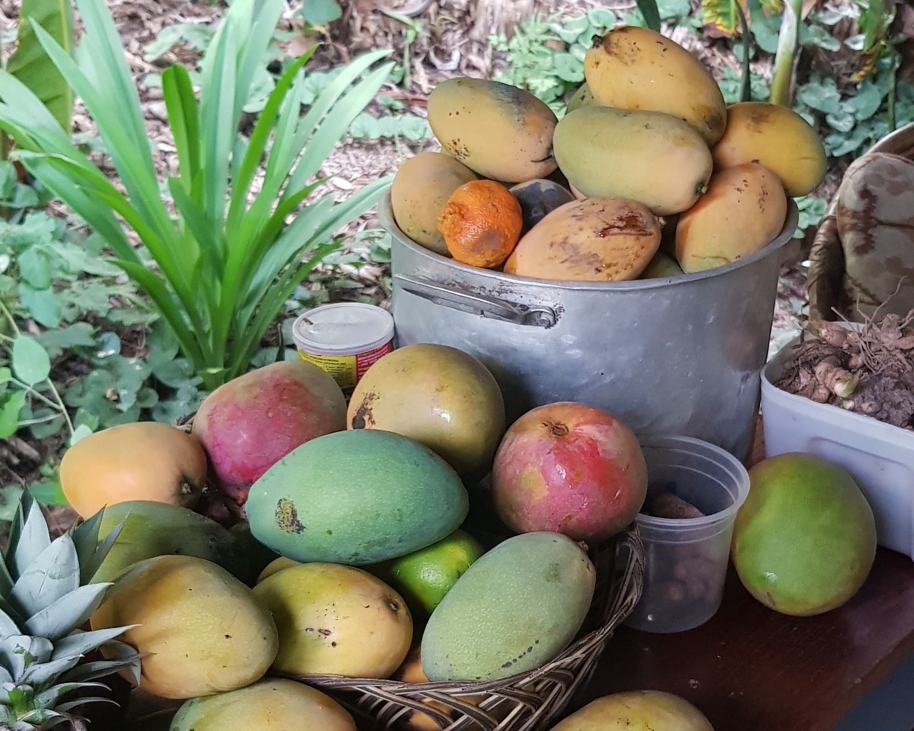
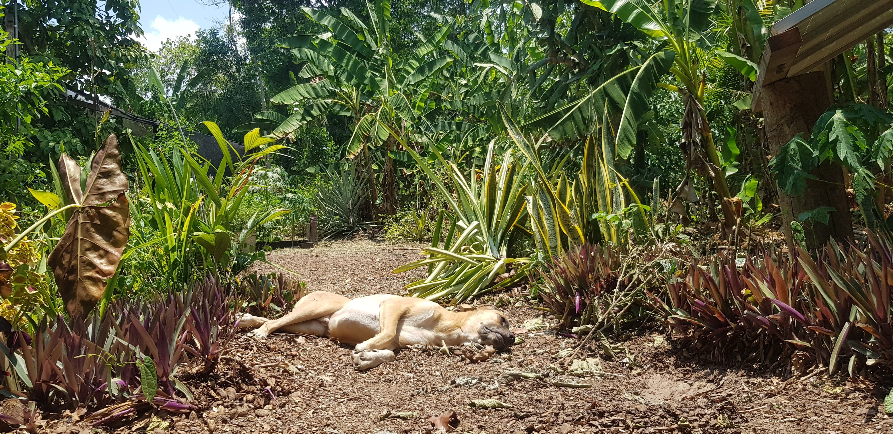

16
Florestania
Over het herstellen van de Amazone,
hoe "Kan ik helpen?" verkeerd uitpakte en
hoe maizena hielp er te overleven.


Hallo lezers, de 14e blog alweer en wat vliegt de tijd. De eerste blog die ik schreef op mijn laatste dagen in Wageningen dateert alweer van ruim een jaar geleden en inmiddels ben ik al 5 maanden op reis in het prachtige Zuid-Amerika, terwijl in Nederland mijn inmiddels één jarige neefje Faas zijn eerste stapjes is beginnen te zetten. Het leven als digital nomad is een onzeker bestaan, maar het geeft me de mogelijkheid om naast het werk wat meer van de wereld te kunnen zien. Naast het digitale werk is het ongelofelijk wat ik allemaal al heb mogen zien, hoeveel steden ik al heb bezocht, welke afstanden ik heb afgelegd en hoeveel mensen ik heb ontmoet.
 Het lijkt misschien eenvoudig, je pakt je laptop en gaat werken in een betaalbaar land zoals Peru maar alleen al om hier in Zuid-Amerika te beginnen, heeft, zoals jullie in deze blog kunnen lezen, heel wat voeten in aarde gehad. Veel energie ging uit naar het leren van twee talen: programmeren en Spaans, waarvan ik nu pas na 3 jaar eindelijk merk dat ik ze echt onder de knie begin te krijgen. Programmeur zijn brengt zijn eigen uitdagingen met zich mee. Waar een leraar vaak snel herkenning zal krijgen wanneer hij iets deelt over de dag, is het voor een programmeur vaak een uitdaging om begrepen te worden, terwijl een programmeur natuurlijk net zo graag over zijn passie vertelt. Waar ontmoet ik andere digital nomads om samen te kunnen sparren over codes of ook eens wat reis frustraties eruit te gooien? Je zou toch haast zeggen, dat er anno 2023 een app moet zijn, waarop je met behulp van een kaart in contact kan komen met digital nomads bij jou de buurt. Geen villa met 15 digital nomads op Bali maar gewoon iets kleins. Of een oud echtpaar met wat vrije kamers, een bureau en internet, waar je een keer gezellig samen kunt verblijven. Zulke informatie zou van onschatbare waarde zijn, maar lijkt op dit moment vooral een utopie.
Het lijkt misschien eenvoudig, je pakt je laptop en gaat werken in een betaalbaar land zoals Peru maar alleen al om hier in Zuid-Amerika te beginnen, heeft, zoals jullie in deze blog kunnen lezen, heel wat voeten in aarde gehad. Veel energie ging uit naar het leren van twee talen: programmeren en Spaans, waarvan ik nu pas na 3 jaar eindelijk merk dat ik ze echt onder de knie begin te krijgen. Programmeur zijn brengt zijn eigen uitdagingen met zich mee. Waar een leraar vaak snel herkenning zal krijgen wanneer hij iets deelt over de dag, is het voor een programmeur vaak een uitdaging om begrepen te worden, terwijl een programmeur natuurlijk net zo graag over zijn passie vertelt. Waar ontmoet ik andere digital nomads om samen te kunnen sparren over codes of ook eens wat reis frustraties eruit te gooien? Je zou toch haast zeggen, dat er anno 2023 een app moet zijn, waarop je met behulp van een kaart in contact kan komen met digital nomads bij jou de buurt. Geen villa met 15 digital nomads op Bali maar gewoon iets kleins. Of een oud echtpaar met wat vrije kamers, een bureau en internet, waar je een keer gezellig samen kunt verblijven. Zulke informatie zou van onschatbare waarde zijn, maar lijkt op dit moment vooral een utopie.
Terwijl ik mijn hersens hierover kraakte besloot ik het over een andere boeg te gooien en begon ik 20 september 2023 aan workaway Florestania in Cobija Bolivia, waar Ellen uit Brazilië en Nico uit Bolivia, twee mensen met een hart van goud, in 2016 op een groot verarmd stuk Amazone regenwoud een prachtig herbebossingsproject zijn begonnen. Deze herbebossing realiseren ze allereerst door bananenbomen en cassave te planten, zodat de grond weer wordt opengebroken en schaduw ontstaat, zodat andere planten zoals cacao, mango, assai en avocado er ook weer kunnen groeien.
 Mijn bed met klamboe ligt in de nok van een jungle hut. Een klamboe die ik iedere avond maar al te goed dicht doe, want er leeft hier van alles. In de ochtend klop je je schoenen uit voor je ze aantrekt, want in onze hut leeft een nest met tarantula spinnen die dol zijn op zweterige schoenen. Die spinnen komen tevoorschijn zodra het donker wordt en toen ik hoorde dat ze hier al 5 jaar zaten en er nog nooit met een vrijwilliger iets was voorgevallen, was ik er al wat meer op gerust. Doordat de eigenaren zo’n hart hebben voor de aarde en alle restproducten hergebruiken gaat er op project Florestania nauwelijks iets verloren. Uitscheiding wordt hergebruikt, voedselresten gaan naar de composthoop voor de moestuin, water wordt uit de grond gepompt en stroom komt van de zonnepanelen. Het merendeel van wat we eten komt uit de moestuin of de directe omgeving. Nico en Ellen, die Florestania hebben opgezet, zijn beiden genoodzaakt om naast het project, wat al een baan op zich is, nog extra werk in de dichtstbijzijnde stad Cobija te verrichten. Helaas is het nog steeds niet genoeg om het hele project te kunnen bekostigen.
Mijn bed met klamboe ligt in de nok van een jungle hut. Een klamboe die ik iedere avond maar al te goed dicht doe, want er leeft hier van alles. In de ochtend klop je je schoenen uit voor je ze aantrekt, want in onze hut leeft een nest met tarantula spinnen die dol zijn op zweterige schoenen. Die spinnen komen tevoorschijn zodra het donker wordt en toen ik hoorde dat ze hier al 5 jaar zaten en er nog nooit met een vrijwilliger iets was voorgevallen, was ik er al wat meer op gerust. Doordat de eigenaren zo’n hart hebben voor de aarde en alle restproducten hergebruiken gaat er op project Florestania nauwelijks iets verloren. Uitscheiding wordt hergebruikt, voedselresten gaan naar de composthoop voor de moestuin, water wordt uit de grond gepompt en stroom komt van de zonnepanelen. Het merendeel van wat we eten komt uit de moestuin of de directe omgeving. Nico en Ellen, die Florestania hebben opgezet, zijn beiden genoodzaakt om naast het project, wat al een baan op zich is, nog extra werk in de dichtstbijzijnde stad Cobija te verrichten. Helaas is het nog steeds niet genoeg om het hele project te kunnen bekostigen.
 Workaway is een populair platform voor culturele uitwisseling waarbij een vrijwilliger 5 dagen in de week 4 uur per dag dient te werken in ruil voor gratis verblijf en eten. Deze vrijwilligerservaring was voor mij een geweldige keuze, omdat ik mij de afgelopen tijd wat alleen voelde en ik tijdens dit project in contact kon komen met andere mensen en een aantal uren per dag actief kon zijn. Daarnaast was het een uitgelezen kans om mijn Spaans in de praktijk te brengen, en om wat te kunnen besparen op levensonderhoud. Klinkt goed, maar gaat dat wel als digital nomad midden in de Amazone jungle? Toen ik hoorde dat er alleen van 11 tot 15 stroom en wifi was dacht ik, laten we het maar gewoon proberen, want jezelf ertoe zetten om je werk in minder tijd te doen, hoeft niet slecht te zijn. Misschien zelfs wel beter omdat je een betere balans hebt tussen activiteiten fysiek, sociaal en op de computer.
Workaway is een populair platform voor culturele uitwisseling waarbij een vrijwilliger 5 dagen in de week 4 uur per dag dient te werken in ruil voor gratis verblijf en eten. Deze vrijwilligerservaring was voor mij een geweldige keuze, omdat ik mij de afgelopen tijd wat alleen voelde en ik tijdens dit project in contact kon komen met andere mensen en een aantal uren per dag actief kon zijn. Daarnaast was het een uitgelezen kans om mijn Spaans in de praktijk te brengen, en om wat te kunnen besparen op levensonderhoud. Klinkt goed, maar gaat dat wel als digital nomad midden in de Amazone jungle? Toen ik hoorde dat er alleen van 11 tot 15 stroom en wifi was dacht ik, laten we het maar gewoon proberen, want jezelf ertoe zetten om je werk in minder tijd te doen, hoeft niet slecht te zijn. Misschien zelfs wel beter omdat je een betere balans hebt tussen activiteiten fysiek, sociaal en op de computer.
 De eerste weken waren een immense shock. Mijn leven was in een klap veranderd van de stad naar het hart van de jungle, van uit eten gaan naar je eten zoeken in de natuur, en van op jezelf zijn naar vierentwintig uur samen zijn. Mijn mede vrijwilligers Chris uit Frankrijk en Gabrielle uit Brazilie, spraken beiden vloeiend Spaans en hadden al een berg aan ervaring met het doen van vrijwilligerswerk, terwijl het voor mij pas de eerste keer was. De dames hadden oog voor ieder detail wat er moest gebeuren, terwijl ik ook van goede wil was, maar dat er nog niet helemaal uitkwam. We waren vooral druk met het schrobben van bamboe, wat uiteindelijk gebruikt zou worden voor het bouwen van een nieuw educatief centrum. Monnikenwerk, want iedere bamboe moest met zeer beperkt gereedschap worden bewerkt. Maar stiekem was het ook heerlijk. Want hoe lang is het niet geleden dat je gewoon eens 4 uur in de natuur aan het werk bent. En we konden ondertussen lekker in het Spaans kletsen over van alles en nog wat, over iets wat ons dwars zat of even samen luisteren naar een oude stoffige Spotify playlist die wel een opfrisbeurt zou kunnen gebruiken.
De eerste weken waren een immense shock. Mijn leven was in een klap veranderd van de stad naar het hart van de jungle, van uit eten gaan naar je eten zoeken in de natuur, en van op jezelf zijn naar vierentwintig uur samen zijn. Mijn mede vrijwilligers Chris uit Frankrijk en Gabrielle uit Brazilie, spraken beiden vloeiend Spaans en hadden al een berg aan ervaring met het doen van vrijwilligerswerk, terwijl het voor mij pas de eerste keer was. De dames hadden oog voor ieder detail wat er moest gebeuren, terwijl ik ook van goede wil was, maar dat er nog niet helemaal uitkwam. We waren vooral druk met het schrobben van bamboe, wat uiteindelijk gebruikt zou worden voor het bouwen van een nieuw educatief centrum. Monnikenwerk, want iedere bamboe moest met zeer beperkt gereedschap worden bewerkt. Maar stiekem was het ook heerlijk. Want hoe lang is het niet geleden dat je gewoon eens 4 uur in de natuur aan het werk bent. En we konden ondertussen lekker in het Spaans kletsen over van alles en nog wat, over iets wat ons dwars zat of even samen luisteren naar een oude stoffige Spotify playlist die wel een opfrisbeurt zou kunnen gebruiken.
 Toen ik vol blijdschap de eerste week had doorstaan, bleek er nog een zware tweede week aan te komen. Eerst kreeg ik flinke koorts en door het zweten kreeg ik vervolgens last van jeuk door kleine beestjes. Maizena, hielp om de huid droog te houden en de beestjes te verwijderen. Deze dagen kwamen er zo veel vrienden, familie en studenten op bezoek bij het project dat de dagen mutje vol kwamen te zitten. Met gemak kon er een middag opgaan aan het maken van mango jam of een pesto van basilicum, of aan de wekelijkse schoonmaak van de jungle hut en was er dus minder tijd voor mijn digitale werk. Ik zette dan om 05:00 uur 's ochtends de wekker om voor het schrobben van de bamboe vlug nog even een uurtje programmeren mee te kunnen pakken. Gekkenwerk als ik eraan terugdenk. Daarbij kwam nog eens dat door de bewolking de zonnepanelen niet genoeg stroom hadden gegenereerd, waardoor ik op de al zo drukke dag naar het dichtstbijzijnde dorpje moest lopen om in een lawaaierig winkeltje met zwerfhonden mijn laptop op te laden.
Toen ik vol blijdschap de eerste week had doorstaan, bleek er nog een zware tweede week aan te komen. Eerst kreeg ik flinke koorts en door het zweten kreeg ik vervolgens last van jeuk door kleine beestjes. Maizena, hielp om de huid droog te houden en de beestjes te verwijderen. Deze dagen kwamen er zo veel vrienden, familie en studenten op bezoek bij het project dat de dagen mutje vol kwamen te zitten. Met gemak kon er een middag opgaan aan het maken van mango jam of een pesto van basilicum, of aan de wekelijkse schoonmaak van de jungle hut en was er dus minder tijd voor mijn digitale werk. Ik zette dan om 05:00 uur 's ochtends de wekker om voor het schrobben van de bamboe vlug nog even een uurtje programmeren mee te kunnen pakken. Gekkenwerk als ik eraan terugdenk. Daarbij kwam nog eens dat door de bewolking de zonnepanelen niet genoeg stroom hadden gegenereerd, waardoor ik op de al zo drukke dag naar het dichtstbijzijnde dorpje moest lopen om in een lawaaierig winkeltje met zwerfhonden mijn laptop op te laden.
Niet alleen voor mij, maar ook voor de eigenaresse leek het allemaal wat te veel te zijn. Ze had hierdoor denk ik wat minder geduld, want zodra ik wat vroeg, zoals bijvoorbeeld over het opladen van mijn laptop via de zonnepanelen batterij, kreeg ik een felle reactie en gaf ze aan dat ze het al heel vaak had uitgelegd. Nu valt het denk ik ook niet mee om steeds aan nieuwe vrijwilligers hetzelfde te moeten uitleggen en al helemaal als ze de taal nog aan het leren zijn. Tijdens een gesprek erover gaf ze ook aan dat ze vond dat ik haar regelmatig onderbrak en dat er hier in Zuid-Amerika een machocultuur is waarbij veel vrouwen regelmatig worden onderbroken als ze iets te zeggen hebben. Verschrikkelijk om te horen natuurlijk, en heel belangrijk dat we daar als mannen ons bewust van zijn, want ik heb dat uiteraard niet zo bedoeld. Het was niet leuk om te horen, terwijl je al wat worstelt met je eerste workaway, hierover het gesprek probeert aan te gaan, dat je dan vergeleken wordt met onderbrekende ‘machos’.
 Het gesprek was misschien niet helemaal gegaan zoals verwacht, toch ging het de dagen erna steeds wat beter. Toen de Braziliaanse dame vertrok, die overigens hartstikke aardig was, veranderde de dynamiek omdat er wat meer ruimte kwam voor mij om dingen op te pakken. Ik had een goede klik met vrijwilligster Chris uit Frankrijk, die actief is bij Extinction Rebellion en die me gelukkig goed begreep. Een programmeur en iemand van Extinction Rebellion. Zo zie je maar, zelfs dat kan matchen. Ze nam steeds de tijd om mij in alle rust wat dingen uit te leggen. Over dat traditioneel vrouwen vaak veel huishoudelijke taken op zich nemen en dat het soms naast de goedbedoelde vraag ‘Kan ik nog ergens mee helpen?’, ook fijn is als je in plaats daarvan kijkt naar wat er moet gebeuren en vervolgens zelf initiatief neemt. Zij heeft echt enorm geholpen om een beetje gevoel te krijgen voor hele simpele alledaagse dingen. We braken per ongeluk een bord en zij stelde voor om een nieuwe te gaan halen voor de familie. Ik begon bij te houden hoe de mensen daar gerechten maken zoals Shakshouka, het bereiden van bonen en het bakken van Arepa koekjes, wat voldoening gaf om eten op dezelfde manier klaar te maken.
Het gesprek was misschien niet helemaal gegaan zoals verwacht, toch ging het de dagen erna steeds wat beter. Toen de Braziliaanse dame vertrok, die overigens hartstikke aardig was, veranderde de dynamiek omdat er wat meer ruimte kwam voor mij om dingen op te pakken. Ik had een goede klik met vrijwilligster Chris uit Frankrijk, die actief is bij Extinction Rebellion en die me gelukkig goed begreep. Een programmeur en iemand van Extinction Rebellion. Zo zie je maar, zelfs dat kan matchen. Ze nam steeds de tijd om mij in alle rust wat dingen uit te leggen. Over dat traditioneel vrouwen vaak veel huishoudelijke taken op zich nemen en dat het soms naast de goedbedoelde vraag ‘Kan ik nog ergens mee helpen?’, ook fijn is als je in plaats daarvan kijkt naar wat er moet gebeuren en vervolgens zelf initiatief neemt. Zij heeft echt enorm geholpen om een beetje gevoel te krijgen voor hele simpele alledaagse dingen. We braken per ongeluk een bord en zij stelde voor om een nieuwe te gaan halen voor de familie. Ik begon bij te houden hoe de mensen daar gerechten maken zoals Shakshouka, het bereiden van bonen en het bakken van Arepa koekjes, wat voldoening gaf om eten op dezelfde manier klaar te maken.
 Duurzaamheid is op dit moment in Nederland een hot thema. Eigenlijk zou dit een fantastische ervaring zijn voor iedere Nederlander. Een maand wonen op de meest eenvoudige boerderij. Je kunt tegen iedereen zeggen dat we zuinig moeten doen met water en voedsel voor klimaatverandering en onze nakomelingen, maar eigenlijk leer je dit pas echt als je er je best voor moet doen. Doordat ik de was stampend met mijn voeten in een emmer water moest doen, kostte het veel tijd en werd ik veel kritischer of het wel echt nodig was om kleding te wassen. Het afvoerputje van de gootsteen liep uit in een emmer water die steeds een stuk verderop bij een avocadoboom geleegd moest worden, waardoor je automatisch veel beter ging letten op de hoeveelheid water die je liet wegspoelen. Voor alles hadden ze een biologische oplossing. Waren er te veel muggen, dan werd er een stukje van een eierdoos aangestoken voor rook. En de pit van de avocado werd op de guacamole gelegd zodat deze langer goed bleef. En was het volle maan, dan werd er gezaaid voor meer aantrekkingskracht van het water om te kunnen groeien. Dat ik nu mijn reis vervolg met een klein bakje waspoeder in mijn tas laat zien dat ik er ook wat van heb opgestoken. Niet dat ik nooit meer de was ga laten doen bij de wasserette, maar het af en toe eens zelf doen kan ook geen kwaad.
Duurzaamheid is op dit moment in Nederland een hot thema. Eigenlijk zou dit een fantastische ervaring zijn voor iedere Nederlander. Een maand wonen op de meest eenvoudige boerderij. Je kunt tegen iedereen zeggen dat we zuinig moeten doen met water en voedsel voor klimaatverandering en onze nakomelingen, maar eigenlijk leer je dit pas echt als je er je best voor moet doen. Doordat ik de was stampend met mijn voeten in een emmer water moest doen, kostte het veel tijd en werd ik veel kritischer of het wel echt nodig was om kleding te wassen. Het afvoerputje van de gootsteen liep uit in een emmer water die steeds een stuk verderop bij een avocadoboom geleegd moest worden, waardoor je automatisch veel beter ging letten op de hoeveelheid water die je liet wegspoelen. Voor alles hadden ze een biologische oplossing. Waren er te veel muggen, dan werd er een stukje van een eierdoos aangestoken voor rook. En de pit van de avocado werd op de guacamole gelegd zodat deze langer goed bleef. En was het volle maan, dan werd er gezaaid voor meer aantrekkingskracht van het water om te kunnen groeien. Dat ik nu mijn reis vervolg met een klein bakje waspoeder in mijn tas laat zien dat ik er ook wat van heb opgestoken. Niet dat ik nooit meer de was ga laten doen bij de wasserette, maar het af en toe eens zelf doen kan ook geen kwaad.
 Aan tafel praten we over alles wat er speelt in de wereld. Over president Trump die een slecht imago heeft maar die eigenlijk relatief weinig oorlogen gevoerd heeft ten opzichte van presidenten Obama en Biden. Over de moderne slavernij die in verschillende grote landen nog gaande is. Of waarom het juist goed is voor de Amazone als je in Europa de Braziliaanse noot koopt. Ik hielp met het opzetten van een Florestania website, en ik gaf een presentatie over mijn werk en mijn passie voor objectherkenning. Nico zei direct na afloop, ‘Dit is een gat in de markt, want hiermee kunnen we automatisch herkennen hoeveel noten onze bomen gaan produceren’.
Aan tafel praten we over alles wat er speelt in de wereld. Over president Trump die een slecht imago heeft maar die eigenlijk relatief weinig oorlogen gevoerd heeft ten opzichte van presidenten Obama en Biden. Over de moderne slavernij die in verschillende grote landen nog gaande is. Of waarom het juist goed is voor de Amazone als je in Europa de Braziliaanse noot koopt. Ik hielp met het opzetten van een Florestania website, en ik gaf een presentatie over mijn werk en mijn passie voor objectherkenning. Nico zei direct na afloop, ‘Dit is een gat in de markt, want hiermee kunnen we automatisch herkennen hoeveel noten onze bomen gaan produceren’.
 De eigenaren van de workaway en ik groeiden steeds wat meer naar elkaar toe, en de laatste dagen baalde ik er zelfs van dat het vertrek aanstaande was. Deze eerste vrijwilligerservaring was niet helemaal vlekkeloos verlopen maar ik was er toch trots op dat we er alsnog samen iets moois van hebben weten te maken. Uiteindelijk bleef ik zelfs 10 dagen langer dan gepland, wat heel fijn was, omdat ik natuurlijk al wist hoe alles ging en ik nieuwe workawayers kon helpen die op het punt stonden om te beginnen. Alsof je in een maand de hele basisschool doorloopt. En het mooiste van alles was nog dat, toen ik vertrok, ik zo veel had meegemaakt dat ik onwijs veel nieuwe energie had om weer lekker te gaan reizen, alleen in een airbnb te zitten en om opnieuw mensen te ontmoeten in hostels.
De eigenaren van de workaway en ik groeiden steeds wat meer naar elkaar toe, en de laatste dagen baalde ik er zelfs van dat het vertrek aanstaande was. Deze eerste vrijwilligerservaring was niet helemaal vlekkeloos verlopen maar ik was er toch trots op dat we er alsnog samen iets moois van hebben weten te maken. Uiteindelijk bleef ik zelfs 10 dagen langer dan gepland, wat heel fijn was, omdat ik natuurlijk al wist hoe alles ging en ik nieuwe workawayers kon helpen die op het punt stonden om te beginnen. Alsof je in een maand de hele basisschool doorloopt. En het mooiste van alles was nog dat, toen ik vertrok, ik zo veel had meegemaakt dat ik onwijs veel nieuwe energie had om weer lekker te gaan reizen, alleen in een airbnb te zitten en om opnieuw mensen te ontmoeten in hostels.